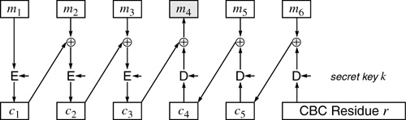

Networking Security Networking Security Networking Security Security Networking Security Networking Security Networking Charlie Kaufman Radia Perlman Mike Speciner Prentice Hall Network Security: Private Communication in a Public World, Second Edition Networking Security Networking Security Networking Security Security Networking Security Networking Security Networking Charlie Kaufman Radia Perlman Mike Speciner Prentice Hall Network Security: Private Communication in a Public World, Second Edition
21.16. DES-CBC as MIC Doesn't Work
Originally, PEM had an additional method of obtaining a MIC on a message, which was the DES-CBC residue. The PEM documentation referred to this form of integrity check as DES-MAC. Ironically, they included this because the MD functions were new and therefore cryptographically suspect, whereas DES CBC residue was used in banking and therefore known to be secure. And it was in the banking context. But not for email. In banking it is used as an integrity check, and has the property that if someone doesn't know the secret key that Alice and Bob share, they cannot modify or forge a message between Alice and Bob. It is instructive to see how something as seemingly straightforward as an integrity check, especially one known to be secure in a highly sensitive application like banking, can have problems. The DES-MAC version of integrity checking has several interesting security problems:
If Alice uses secret key interchange keys and ever sends a message to multiple recipients, say Bob and Ted, then Bob can thereafter send DES-MAC integrity check messages (MIC-CLEAR, MIC-ONLY, or ENCRYPTED) to Ted, claiming to be Alice (and Ted can likewise send such messages to Bob claiming to be Alice). This is true regardless of the choice of integrity check (DES-MAC, MD2, or MD5) Alice chose when she sent the multi-recipient message. If Alice is using public key technology for interchange keys and uses DES-MAC as the integrity check when sending an ENCRYPTED message to Bob, Bob can thereafter send messages to anyone he wants, claiming to be Alice. With public key interchange keys, if Alice sends a MIC-CLEAR or MIC-ONLY (as opposed to ENCRYPTED) message to Bob, anyone who eavesdrops on the message can thereafter send messages to anyone she wants, claiming to be Alice. Suppose Alice, knowing that DES-MAC is not a secure integrity check, never uses it herself. But Ted is happy to accept DES-MAC messages. If Alice sends a message using either MD2 or MD5, someone can use her signature on that message to create a forged message that uses DES-MAC and would appear to come from Alice; Ted would accept such a message as genuine. (Vulnerabilities depend on whether interchange keys are secret or public, and whether the message was encrypted or not. See Homework Problem 12).
We'll have to describe how DES-MAC is specified in the earlier PEM specification. Suppose Alice is sending a message to Bob and Ted. The algorithm for using DES-MAC as the integrity check is as follows:
1. | Choose a per-message key (this is the same key PEM would use if PEM was going to encrypt the message).
| 2. | Modify the per-message key by  ing it with F0F0F0F0F0F0F0F0 16 (to avoid the classic cryptographic flaw described in § 4.3.1 Ensuring Privacy and Integrity Together). | 3. | Compute the 64-bit CBC residue with the modified per-message key.
| 4. | Encrypt the residue. If secret key based interchange keys are used, encrypt the CBC residue with the interchange key associated with Ted, plus encrypt the CBC residue with the interchange key associated with Bob, and send both quantities along with the message. If public key based interchange keys are used, Alice signs the residue with her private RSA key.
|
The problem is that it is possible, given a 64-bit quantity x and a DES key k, to generate a message m such that the CBC residue of m with key k is x. (We'll demonstrate that later in this section.) Let's look at several cases:
Alice sends a MIC-ONLY message to Bob, using public key interchange keys, using DES-MAC as the integrity check. Carol eavesdrops on the message. She can see that it came from Alice. She finds Alice's public key, extracts the signed DES-MAC from the message header, and reverses the signature on the DES-MAC, thereby retrieving the DES-MAC of the message. Carol now knows the quantity x (the DES-MAC) and the quantity y, which is Alice's signature on x. As we said, she can invent any key k and construct a message m with DES-MAC x (using key k). She can then send m to anyone she wants, say Ted, and claim that the message was from Alice, because she'll include y as the signed DES-MAC for m. Suppose instead that Alice sends an encrypted message to Bob. In this case only Bob knows the quantities x (the DES-MAC of the message) and y (Alice's signature on x) because PEM specifies that if the message is encrypted, the integrity check is encrypted with the key used to encrypt the per-message key. But that means that Bob can now send messages claiming to be Alice, just like any eavesdropper could have done in the previous example. Alice sends a message with DES-MAC integrity check to both Bob and Ted, using secret key interchange keys. So she shares a key KAB with Bob, and shares a key KAT with Ted. The DES-MAC is included twice, once encrypted with KAB and once encrypted with KAT. Furthermore the per-message key k is sent twice, once encrypted with KAB and once encrypted with KAT. An eavesdropper cannot discover the DES-MAC of the message even if the message isn't encryptedÂshe can't compute it because she doesn't know k, and she can't decrypt the encrypted DES-MAC because she doesn't know either KAB or KAT. However, Bob does know the DES-MAC x, and can see KAT{x}. He also knows k and KAT{k}. So after receiving this message from Alice, Bob can construct a message m with CBC residue x, send it to Ted using per-message key k, claim that Alice is sending it, and send KAT{k} as the encrypted per-message key and KAT{x} as the encrypted DES-MAC. Alice sends a message with MD5 integrity check to Bob and Ted, using secret key interchange keys. PEM specifies that each of the two 64-bit halves of the MD5 is encrypted with the interchange key of each recipient. Let's say that the halves are x1 and x2. So Alice will send KAT{x1} and KAB{x1} as well as KAT{x2} and KAB{x2}. Now even though Alice wasn't using DES-MAC, Bob knows a 64-bit quantity (say x2) and what that quantity looks like when encrypted with KAT. He also knows the per-message key k and KAT{k}. So Bob can construct a message m with CBC-residue x2 and send it to Ted using per-message key k, claiming that it was from Alice and that DES-MAC was the integrity check used. Note that any of the quantities x1, x2, or k could have been chosen to be the per-message key and/or the DES-MAC of the forged message.
Now we'll show how, given a 64-bit value r and a key k, it is possible for Carol to construct a message m with r as the CBC residue (using key k) (see Figure 21-3). Carol can actually construct any message she wants. The only constraint on the message is that somewhere inside the message there has to be a 64-bit block (8 characters) that must be filled with a value determined only by the rest of the message and r and k.

Let's assume that there's one 8-byte block of the message, say m4, that Carol can fill with "garbage" without suspicion. She constructs the message she wants in the remaining plaintext blocks. She will be sending a message to Ted, signed by Alice. Ted might think it strange to have 8 bytes of crud in the middle of the message, but maybe Carol can cleverly write the message so that somewhere inside the message she says something like, Hey, did I tell you about how I fixed my porch this weekend? It went well until I hit my thumb with the hammer. Then I said, "@f#!Ruoe"! Now, back to business ...
Alternatively, mailers are so wonderfully user-friendly that cybercrud appears in them all the time. PEM headers certainly are ugly and would be ignored by a human. Even non-PEM messages often contain obscure-looking headers and postmarks. If Carol were to embed arbitrary cybercrud there it probably would not create suspicion.
Anyway, Carol works backwards from r. DES is reversible, so she can decrypt r and that value with m6 to discover what c5 should be. She then decrypts c5 and s it with m5, to compute c4.
Also, she works forward. She can encrypt m1 to get c1. Then she s c1 with m2 and encrypts the result to get c2 and then s c2 with m3 and encrypts the result to get c3. Now she has gotten to where the two ends of the computation meet. She s c3 with the decryption of c4 to get m4.
Why don't the other types of MIC have the problems we've described in this section? The reason is that with message digests it is impossible for Carol to come up with another message with a particular message digest. So the PEM designers simply removed DES-MAC as a permissible integrity check.
|